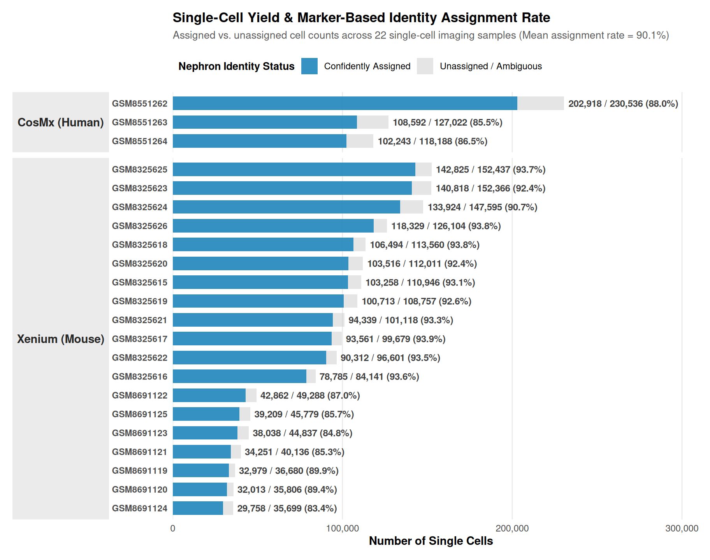
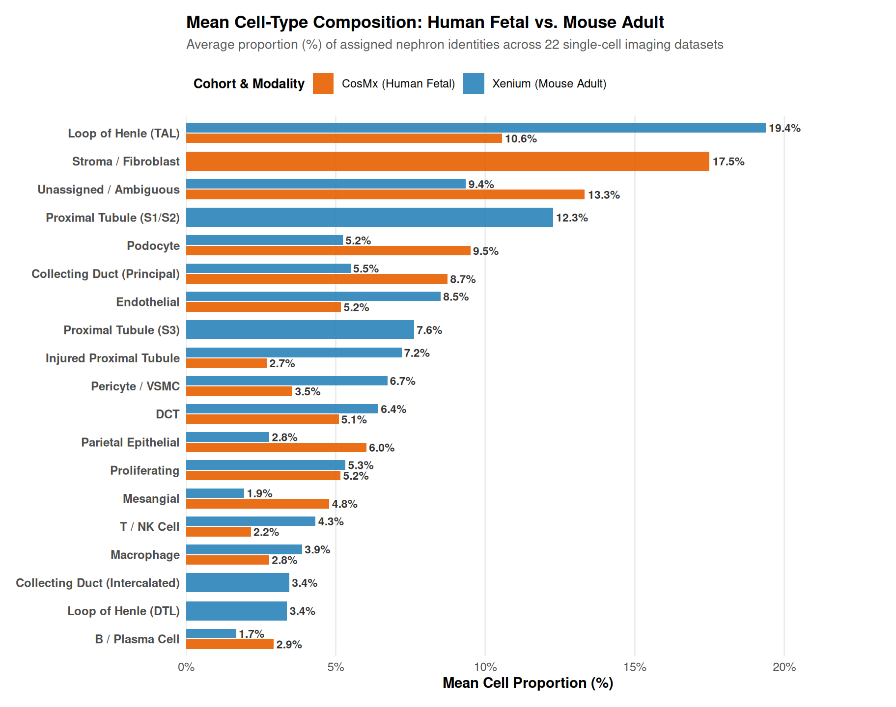
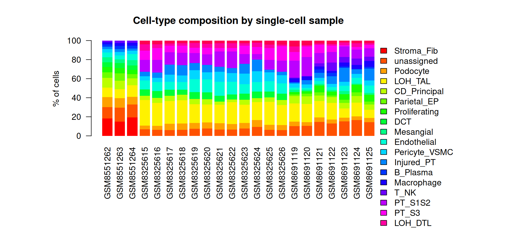
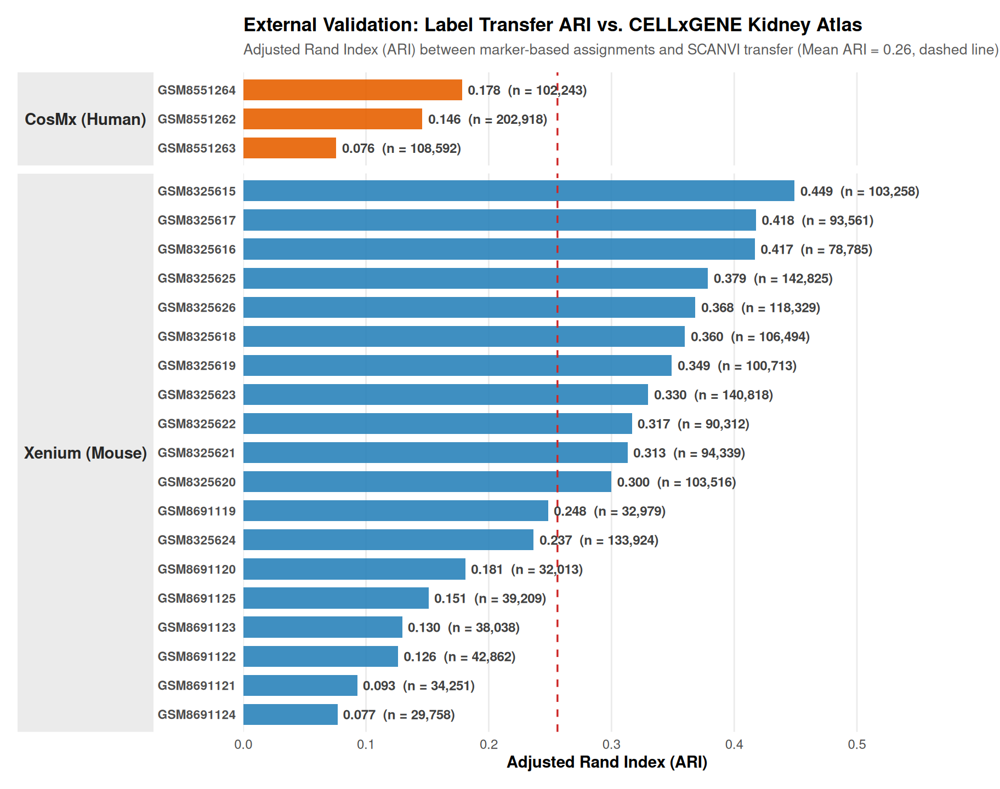

The first tier worth examining closely is the finest one, the single-cell tier. Xenium and CosMx image individual cells and count transcripts in place, giving roughly 2M single cells across the 22 imaging samples. This is the platform pair that can reveal what the kidney is made of, cell by cell, with no unmixing required.
The approach is deliberately unsupervised and reference-free. I score every cell for eighteen curated nephron programs (podocyte, parietal epithelial, proximal tubule S1/S2 and S3, loop of Henle TAL and DTL, distal convoluted tubule, collecting-duct principal and intercalated, stroma/fibroblast, endothelium, mesangium, pericyte/VSMC, macrophage, T/NK, B/plasma, injured proximal tubule, and proliferation) using standard gene-set scoring on the panel genes each platform measures. A cell is assigned the program it scores highest on, provided the winning margin is clear enough; otherwise it is left unassigned.
Two implementation details are worth stating. The eighteen programs are curated lists of three to five genes each, kept separately in human and mouse spelling, and the scores come from a standard gene-set scoring routine in the scanpy toolkit applied to the log-normalized counts of each cell. The assignment gate is a real threshold: a cell must beat the second-best program by a clear margin, and cells that do not are left unassigned rather than pushed into a label.
The result, across all 22 samples:

An average of 90.1% of cells are confidently assigned to a nephron identity, with no reference data and no training. The remaining ~10% represent the uncertainty at the decision boundary; I report them rather than force them into a label.


Two biological facts stand out, and both match the textbook biology of the kidney.
First, the adult mouse kidney’s composition is exactly what renal histology predicts. The loop of Henle is the dominant compartment (about a quarter of all cells in a whole-kidney section, because the medulla holds the mass of the section), followed by proximal tubule S1/S2 and S3 (roughly 13% each), endothelium (~9%), and a podocyte fraction of a few percent, consistent with the small volume glomerular tufts occupy in a whole kidney. The distal tubule, collecting system, stroma, and immune cells each sit in their expected ranges.
Second, the fetal human kidney is a different organ, and the data reflect that. The CosMx fetal kidneys (weeks 15–19) are stroma-dominant (~19%), with podocytes elevated to ~8–10% and a still-immature loop of Henle. A developing kidney is building its tubules and its filtering surface; it has not yet scaled up the adult tubular machinery. The markers capture the developmental switch without any prior instruction.
The assignments above are marker-based and reference-free by design. To check them against an independent reference, I transferred reference-based labels from the same-species kidney slice of the CELLxGENE Census with SCANVI and measured the adjusted Rand index (ARI) between the marker-based and transferred labels over the confidently assigned cells.

Across the 22 single-cell samples the agreement was 0.26 on average (range 0.08 to 0.45). The mouse imaging samples agree more closely with the mouse census kidney (mean 0.28, up to 0.45) than the human fetal sections agree with the human reference (mean 0.13). The reference labels are the original studies’ annotations, harmonized to the same module vocabulary, so the check is genuinely external rather than circular. The residual disagreement marks cells where a panel and a whole transcriptome, or a fetal section and an adult atlas, genuinely differ; the marker-based assignment remains the primary lens, and the transfer ARI reports how far an independent reference agrees with it.
Briefly, the label transfer was implemented using SCANVI, a label-transfer module of the scvi-tools stack, against the same-species kidney slice of the CELLxGENE Census: a whole-transcriptome reference of roughly twenty thousand cells per species, retrieved and harmonized to the same eighteen-module vocabulary. Some imaging sections hold well over a million cells, so I subsampled the query cells for the transfer to keep the joint training tractable, and I computed the ARI only over the cells assigned with confidence. I kept the marker-based reading primary and treated the transfer as a second opinion; the point of doing the primary pass reference-free is that the marker-based reading is my own, and the transfer exists to measure how far an independent atlas concurs.
The single-cell lens is the sharpest in the kit, but the costs are worth naming:
The panels bound discovery. Xenium measures 300–541 genes, CosMx 995. Every cell’s identity is decided by a curated panel, not the transcriptome. The programs I scored are the ones the panels can support; programs a panel simply does not measure are invisible here.
The unassigned ~10% is real. Cells at the decision boundary, including transitional states, rare types, and damaged cells, are left unassigned. That unassigned fraction is what the data show; forcing the cells into a label would be fabrication.
Composition differs from function. The markers indicate what a cell is; they do not indicate what it is doing. A proximal-tubule cell in an injured kidney and one in a healthy kidney carry the same label until the injury program is scored separately, which is exactly what Chapter 7 does.
The take home message is: the single-cell platforms resolve the kidney’s composition directly, at 90% assignment, without supervision, and the composition is the biology the textbooks describe. Every other platform in this analysis will be evaluated, in part, by whether it can recover what the single cells already revealed.